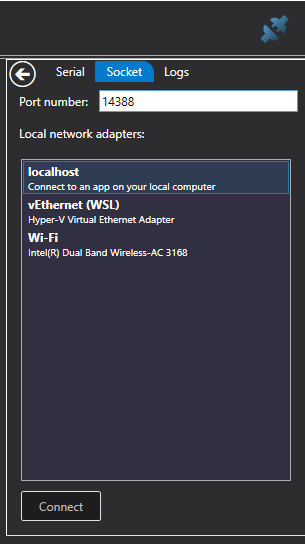

Log Viewer
The LogViewer is a Windows WPF app that presents the MavLink streams that it is getting from the Unreal Simulator. You can use this to monitor what is happening on the drone while it is flying. For example, the picture below shows a real time graph of the x, y an z gyro sensor information being generated by the simulator.
Usage
You can open a log file, it supports .mavlink and PX4 *.ulg files, then you will see the contents of the log in a tree view on the left, whatever metrics you select will be added to the right the right side. You can close each individual chart with the little close box in the top right of each chart and you can group charts so they share the same vertical axis using the group charts button on the top toolbar.

There is also a map option which will plot the GPS path the drone took. You can also load multiple log files so you can compare the data from each.
Realtime
You can also get a realtime view if you connect the LogViewer before you run the simulation.

For this to work you need to configure the settings.json with the following settings:
{
"SettingsVersion": 2.0,
"SimMode": "Multirotor",
"Vehicles": {
"PX4": {
...,
"LogViewerHostIp": "127.0.0.1",
"LogViewerPort": 14388,
}
}
}
Note: do not use the "Logs" setting when you want realtime LogViewer logging. Logging to a file using "Logs" is mutually exclusive with LogViewer logging.
Simply press the blue connector button on the top right corner of the window, select the Socket
tab, enter the port number 14388, and your localhost network. If you are using WSL 2 on
Windows then select vEthernet (WSL).
If you do choose vEthernet (WSL) then make sure you also set LocalHostIp and
LogViewerHostIp to the matching WSL ethernet address, something like 172.31.64.1.
Then press the record button (triangle on the right hand side of the toolbar). Now start the simulator, and the data will start streaming into LogViewer.
The drone view in Log Viewer shows the actual estimated position coming from the PX4, so that is a great way to check whether the PX4 is in sync with the simulator. Sometimes you can see some drift here as the attitude estimation catches up with reality, this can become more visible after a bad crash.
Installation
If you can't build the LogViewer.sln, there is also a click once installer.
Configuration
The magic port number 14388 can be configured in the simulator by editing the settings.json
file. If you change the port number in LogViewer connection dialog then be sure
to make the matching changes in your settings.json file.
Debugging
See PX4 Logging for more information on how to use the LogViewer to debug situations you are setting.